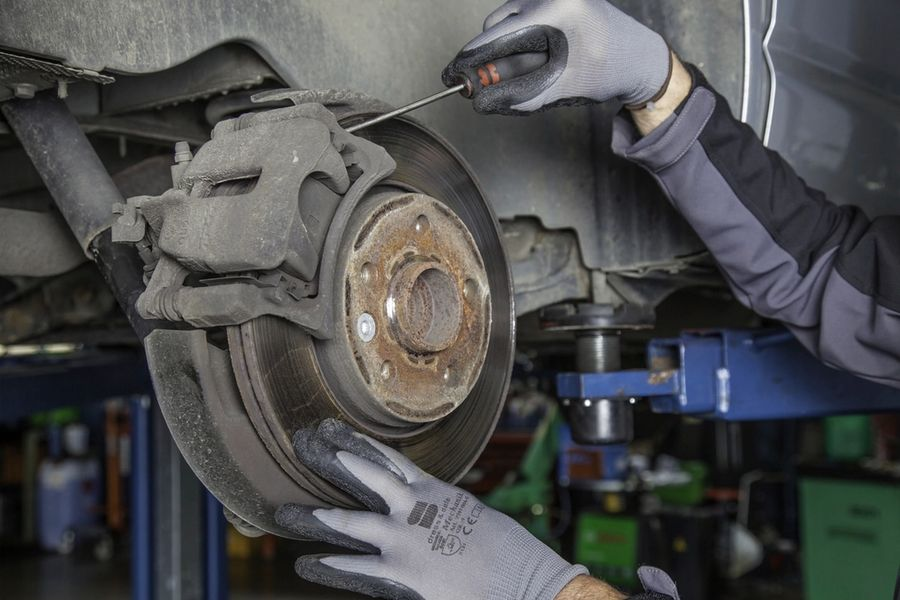

Jant
Jant tamiri ve jant satışı
Çukura girdiniz, kaldırıma sürttünüz, direksiyon titremeye başladı: jantınıza birlikte bakalım. Yeni jant arıyorsanız künyesini yazmanız yeterli.
Jant hasarını tanıyın
Altı yaygın hasar, nasıl oluştukları ve araçta nasıl hissedildikleri.
Eğrilik
Çukur ya da kasis darbesiyle jant yuvarlaklığını kaybeder. Belirti: balansla geçmeyen titreşim, yavaş hava kaybı.
Dudak ezilmesi
Kaldırım ya da çukur kenarı, jantın dış dudağını içe büker. Belirti: lastik tam oturmaz, hava kaçırır.
Çatlak
Sert darbelerden sonra, çoğunlukla jantın iç tarafında görülür. Güvenlik açısından en ciddi hasardır; her çatlak onarılmaz, bakılıp değerlendirilmesi gerekir.
Kaldırım çiziği
Park ederken janta sürten kaldırımın bıraktığı iz. Çoğu zaman yalnız görünümü bozar; derinse dudağı zayıflatabilir.
Korozyon, boya kabarması
Yol tuzu ve fren tozu zamanla verniğin altına işler. Lastiğin oturduğu yüzeydeki korozyon hava kaçağına yol açar.
Bijon yuvası hasarı
Gevşek ya da yanlış bijonla kullanım yuvaları ovalleştirir. Belirti: tıkırtı, tekerde gevşeme. Vakit kaybetmeden baktırın.
Bir hasarın onarılıp onarılamayacağı jantın malzemesine, hasarın yerine ve büyüklüğüne bağlıdır. En sağlıklısı fotoğrafını göndermeniz ya da jantı getirip göstermenizdir.
Jant hasarını bildir
Gördüğünüzü işaretleyin; mesajınız hazırlansın. WhatsApp'ta açılınca hasarın bir fotoğrafını da ekleyin.
Gidecek mesaj
Mesaj siz göndermeden gitmez: WhatsApp'ta açılır, isterseniz düzeltip yollarsınız. WhatsApp kullanmıyorsanız mesajı kopyalayın ya da arayın.
Jantın künyesi
Bir jantın araca uyup uymayacağını beş değer belirler. Çoğu jantta iç yüzeye ya da kolların arkasına dökümle yazılır: 7J×16 ET45 5×112 gibi.
- 7J
Genişlik. Jantın iki dudağı arası, inç olarak. J harfi dudak profilini gösterir. Takılabilecek lastik genişliğini bu değer belirler.
- 16
Çap. İnç olarak. Lastik ebatında R harfinden sonra gelen sayıyla aynı olmalıdır.
- ET45
Ofset. Montaj yüzeyinin jantın orta eksenine uzaklığı, milimetre. Sayı küçüldükçe teker dışarı çıkar, büyüdükçe içeri girer.
- 5×112
Bijon düzeni (PCD). Bijon sayısı ve bijonların dizildiği dairenin milimetre olarak çapı. Araçla tam tutmalıdır.
- 57,1
Göbek çapı. Jantın ortasındaki deliğin milimetre olarak çapı. Aracın poyrasına oturmalıdır; büyükse merkezleme halkası gerekir.
Künye ve bijon düzeni çizici
Değerleri seçin; jant ölçekli olarak çizilsin, künyesi yazılsın. Kırmızı kesikli daire PCD'dir.
Gidecek mesaj
Mesaj siz göndermeden gitmez: WhatsApp'ta açılır, isterseniz düzeltip yollarsınız. WhatsApp kullanmıyorsanız mesajı kopyalayın ya da arayın.
PCD nasıl ölçülür?
Dört ve altı bijonlu jantta iş kolaydır: karşılıklı iki bijon deliğinin merkezden merkeze uzaklığını ölçersiniz.
Beş bijonluda karşılıklı delik yoktur. Yan yana iki deliğin merkezleri arasını ölçüp 1,7 ile çarpın; sonuç PCD'dir. Örneğin 65,8 mm ölçtüyseniz PCD 112'dir.
Birbirine çok yakın değerler (112 ile 114,3 gibi) gözle ayırt edilmez ama birbirinin yerine takılmaz. Emin değilseniz aracınızı yazın, biz bakalım.
| Konu | Çelik (sac) | Alaşım |
|---|---|---|
| Ağırlık | Daha ağır | Daha hafif |
| Darbede | Eğilir; çoğu zaman düzeltilir | Sert darbede çatlayabilir |
| Görünüm | Sade, jant kapağıyla | Çok çeşitli tasarım |
| Kışın | Kışlık takımda yaygın | Vernik hasarlıysa tuzdan etkilenir |
| Bakım | Pas noktalarını boyayın | Asitli temizleyiciden kaçının |
Bijonlar çapraz sıkılır
Bijonlar önce elle oturtulur, sonra çapraz (yıldız) sırayla sıkılır; böylece jant poyraya her yerden eşit basar. Yan yana sırayla sıkılan jant eğri oturabilir.
Son sıkma, teker yere indikten sonra üreticinin verdiği tork değerine göre yapılır. Bu değer araçtan araca değişir ve kullanım kılavuzunda yazar.
Teker sökülüp takıldıktan sonraki ilk 50–100 kilometrede bijonları bir kez daha kontrol etmek iyi bir alışkanlıktır.
Beş bijonlu tekerde sıra: üstteki bijondan başlayın, her seferinde bir bijon atlayarak ilerleyin.

Jantı uzun ömürlü tutan alışkanlıklar
- Lastik basıncını etiket değerinde tutun; düşük basınçta çukur darbesi doğrudan janta gelir.
- Fren tozunu birikmeden, ılık su ve nötr şampuanla yıkayın.
- Sıcak janta soğuk su tutmayın; önce soğumasını bekleyin.
- Kış sonunda jantların iç yüzündeki tuzu da yıkayın.
- Kaldırıma yanaşırken aynadan arka tekere bakın.
- Kilitli bijonunuz varsa anahtarını araçta, bildiğiniz bir yerde saklayın.
Jantın fotoğrafını gönderin
Hasarı görünce ne yapılabileceğini konuşalım. Jant alacaksanız künyeyi ya da aracınızı yazın.